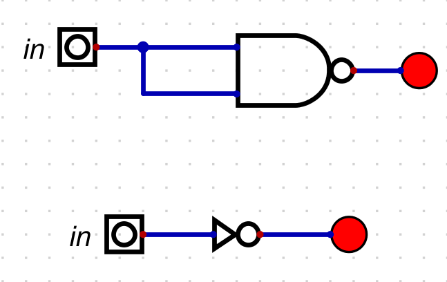
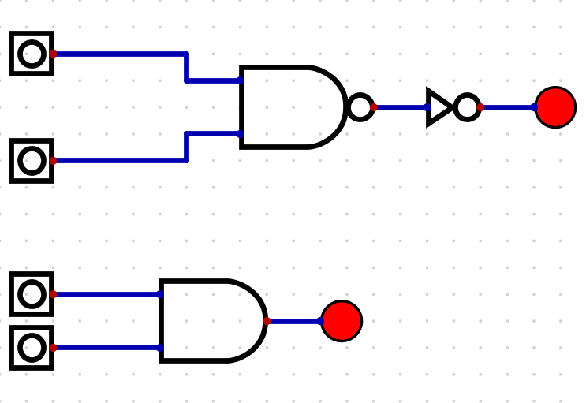
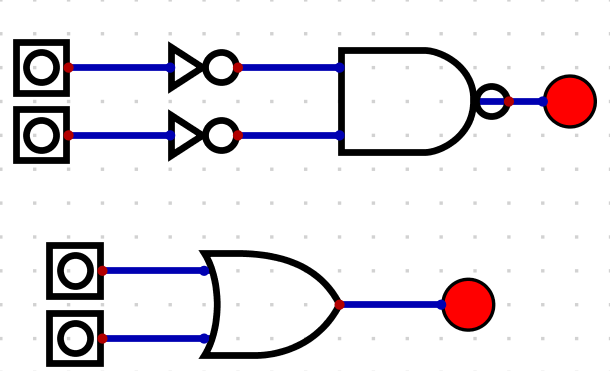
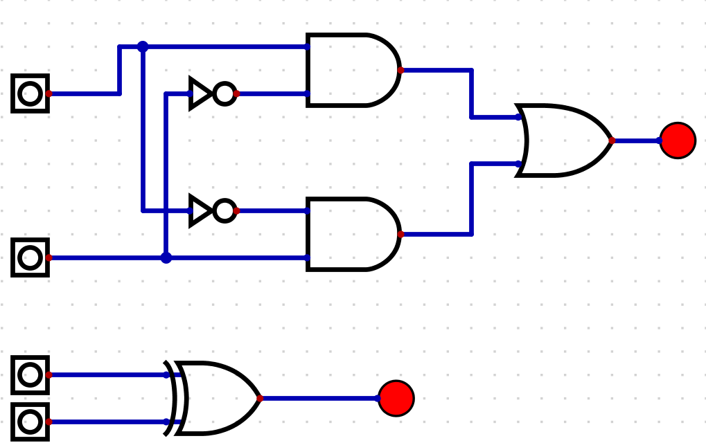
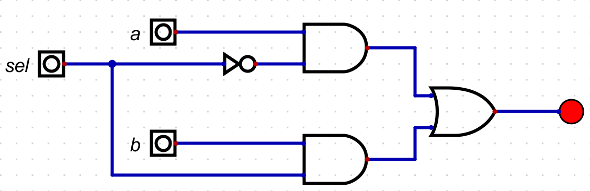
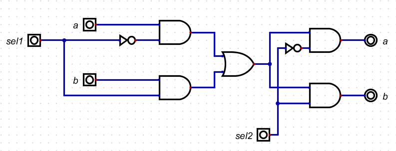

Özet
Bu bölümde ne yaptığımı ve neyi öğrendiğimi iki-üç cümleyle yaz.
Kavramlar
- Boolean Algebra:1-0, Açık-Kapalı gibi ikilik tanımlamalar ve birbirleriyle mantıksal ilişkilerini işleyen cebirsel işlemler bütünü.
- Boolean Gates / Logic Gates:Boolean fonksiyonlarını fiziksel bir araçla gerçekleştirme işine yarar.
- Truth Table:
- Canonicle Representation:
- Chip:Tek tek transistörlerle kapıları yapmakla uğraşmıyoruz IC çipler ile tek bir araç ile o kapı(ları) gerçekleştirebiliyor.
- COMPOSITE GATES???
Yaptıklarım
Not kapısı

// File name: projects/1/Not.hdl
/**
* Not gate:
* if (in) out = 0, else out = 1
*/
CHIP Not {
IN in;
OUT out;
PARTS:
Nand(a=in, b=in, out=out);
}
And kapısı

// This file is part of www.nand2tetris.org
// and the book "The Elements of Computing Systems"
// by Nisan and Schocken, MIT Press.
// File name: projects/1/And.hdl
/**
* And gate:
* if (a and b) out = 1, else out = 0
*/
CHIP And {
IN a, b;
OUT out;
PARTS:
Nand(a=a, b=b, out=w1);
Not(in=w1, out=out);
}
Or kapısı

// This file is part of www.nand2tetris.org
// and the book "The Elements of Computing Systems"
// by Nisan and Schocken, MIT Press.
// File name: projects/1/Or.hdl
/**
* Or gate:
* if (a or b) out = 1, else out = 0
*/
CHIP Or {
IN a, b;
OUT out;
PARTS:
Not(in=a, out=nota);
Not(in=b, out=notb);
Nand(a=nota, b=notb, out=out);
}
Xor kapısı

// This file is part of www.nand2tetris.org
// and the book "The Elements of Computing Systems"
// by Nisan and Schocken, MIT Press.
// File name: projects/1/Xor.hdl
/**
* Exclusive-or gate:
* if ((a and Not(b)) or (Not(a) and b)) out = 1, else out = 0
*/
CHIP Xor {
IN a, b;
OUT out;
PARTS:
Not(in=a, out=nota);
Not(in=b, out=notb);
And(a=a, b=notb, out=w1);
And(a=nota, b=b, out=w2);
Or(a=w1, b=w2, out=out);
}
MUX kapısı

// This file is part of www.nand2tetris.org
// and the book "The Elements of Computing Systems"
// by Nisan and Schocken, MIT Press.
// File name: projects/1/Mux.hdl
/**
* Multiplexor:
* if (sel = 0) out = a, else out = b
*/
CHIP Mux {
IN a, b, sel;
OUT out;
PARTS:
Not(in=sel, out=notsel);
And(a=a, b=notsel, out=w1);
And(a=sel, b=b, out=w2);
Or(a=w1, b=w2, out=out);
}
DMux kapısı

// This file is part of www.nand2tetris.org
// and the book "The Elements of Computing Systems"
// by Nisan and Schocken, MIT Press.
// File name: projects/1/DMux.hdl
/**
* Demultiplexor:
* [a, b] = [in, 0] if sel = 0
* [0, in] if sel = 1
*/
CHIP DMux {
IN in, sel;
OUT a, b;
PARTS:
Not(in=sel, out=notsel);
And(a=in, b=notsel, out=a);
And(a=in, b=sel, out=b);
}
Takıldığım yerler
Her bir kapının diğer kapılardan nasıl oluştuğunu anlamak için yalnızca truth table üzerinde anlamlandırmaya çalışıyordum. Kitabı biraz daha okuyunca anladım ki truth table'ı sesli okumak hangi kapılara ihtiyacımız olduğunu direkt olarak söylüyor zaten. Örneğin Xor kapısını ele alalım: a ve b'nin tersi ya da a'nın tersi ve = 1 yani ((a and Not(b)) or (Not(a) and b)) out = 1, else out=0
Kaynaklar
- The elements of Computing Systems
- Hardware Simulation
- Digital Simulation